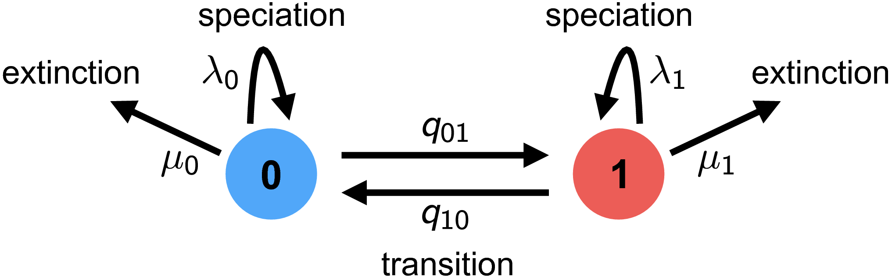

Introduction
This is a general introduction to character state-dependent branching process models, particularly as they are implemented in RevBayes. Frequently referred to as state-dependent speciation and extinction (SSE) models, these models are a birth-death process where the diversification rates are dependent on the state of an evolving character. The original model of this type considered a binary character (a trait with two discrete state values; called BiSSE, (Maddison et al. 2007). Several variants have also been developed for other types of traits (FitzJohn 2010; Goldberg et al. 2011; Goldberg and Igić 2012; Magnuson-Ford and Otto 2012; FitzJohn 2012; Beaulieu and O’Meara 2016; Freyman and Höhna 2018).
RevBayes can be used to specify a wide range of SSE models. For specific examples see these other tutorials:
- BiSSE and MuSSE models: State-dependent diversification with BiSSE and MuSSE
- ClaSSE and HiSSE models: State-dependent diversification with HiSSE and ClaSSE
- ChromoSSE: Chromosome Evolution
Background: The BiSSE Model
The binary state speciation and extinction model (BiSSE) (Maddison et al. 2007) was introduced because of two problems identified by Maddison (2006). First, inferences about character state transitions based on simple transition models [like Pagel (1999)] can be thrown off if the character affects rates of speciation or extinction. Second, inferences about whether a character affects lineage diversification based on sister clade comparisons (Mitter et al. 1988) can be thrown off if the transition rates are asymmetric. BiSSE and related models are now mostly used to assess if the states of a character are associated with different rates of speciation or extinction.
RevBayes implements the extension of BiSSE to any number of discrete states–i.e., the MuSSE model in diversitree; (FitzJohn 2012). We will first describe the general theory about the model.
The theory behind state-dependent diversification models

General approach
The BiSSE model assumes two discrete states (i.e., a binary character), and that the state of each extant species is known (i.e., the discrete-valued character is observed). The general approach adopted by BiSSE and related models is to derive a set of ordinary differential equations (ODEs) that describe how the probability of observing a descendant clade changes along a branch in the observed phylogeny. Each equation in this set describes how the probability of observing a clade changes through time if it is in a particular state over that time period; collectively, these equations are called $\frac{\mathrm{d}D_{N,i}(t)}{\mathrm{d}t}$, where $i$ is the state of a lineage at time $t$ and $N$ is the clade descended from that lineage.
Computing the likelihood proceeds by establishing an initial value problem. We initialize the procedure by observing the character states of some lineages, generally the tip states. Then starting from those probabilities (e.g., species X has state 0 with probability 1 at the present), we describe how those probabilities change over time (described by the ODEs), working our way back until we have computed the probabilities of observing that collection of lineages at some earlier time (e.g., the root).
As we integrate from the tips to the root, we need to deal with branches coming together at nodes. Assuming that the parent and daughter lineages have the same state, we multiply together the probabilities that the daughters are state $i$ and the instantaneous speciation rate $\lambda_i$ to get the initial value for the ancestral branch subtending that node.
Proceeding in this way down the tree results in a set of $k$ probabilities at the root; these $k$ probabilities represent the probability of observing the phylogeny conditional on the root being in each of the states (i.e., the $i^\text{th}$ conditional probability is the probability of observing the tree given that the root is in state $i$). The overall likelihood of the tree is a weighted average of the $k$ probabilities at the root, where the weighting scheme represents the assumed probability that the root was in each of the $k$ states.
As with all birth-death process models, special care must be taken to account for the possibility of extinction. Specifically, the above ODEs must accommodate lineages that may arise along each branch in the tree that subsequently go extinct before the present (and so are unobserved). This requires a second set of $k$ ODEs, $\frac{ \mathrm{d}E_{i}(t)}{\mathrm{d}t}$, which define how the probability of eventual extinction from state $i$ changes over time. These ODEs must be solved to compute the differential equations $\frac{ \mathrm{d}D_{N,i}(t)}{\mathrm{d}t}$. We will derive both sets of equations in the following sections.
Derivation for the binary state birth-death process
The derivation here follows the original description in Maddison et al. (2007). Consider a (time-independent) birth-death process with two possible states (a binary character), with diversification rates and .
Clade probabilities, $D_{N, i}$
We define $D_{N,0}(t)$ as the probability of observing lineage $N$ descending from a particular branch at time $t$, given that the lineage at that time is in state 0. To compute the probability of observing the lineage at some earlier time point, $D_{N,0}(t + \Delta t)$, we enumerate all possible events that could occur within the interval $\Delta t$. Assuming that $\Delta t$ is small—so that the probability of more than one event occurring in the interval is negligible—there are four possible scenarios within the time interval ():
-
nothing happens;
-
a transition occurs, so the state changes $0 \rightarrow 1$;
-
a speciation event occurs, and the right descendant subsequently goes extinct before the present, or;
-
a speciation event occurs and the left descendant subsequently goes extinct before the present.
We are describing events within a branch of the tree (not at a node), so for (3) and (4), we require that one of the descendant lineages go extinct before the present because we do not observe a node in the tree between $t$ and $t + \Delta t$.

We can thus compute $D_{N,0}(t + \Delta t)$ as:
A matching equation can be written down for $D_{N,1}(t+\Delta t)$.
To convert these difference equations into differential equations, we take the limit $\Delta t \rightarrow 0$. With the notation that $i$ can be either state 0 or state 1, and $j$ is the other state, this yields:
Extinction probabilities, $E_i$
To solve the above equations for $D_{N, i}$, we see that we need the extinction probabilities. Define $E_0(t)$ as the probability that a lineage in state 0 at time $t$ goes extinct before the present. To determine the extinction probability at an earlier point, $E_0(t+\Delta t)$, we can again enumerate all the possible events in the interval $\Delta t$ ():
-
the lineage goes extinct within the interval;
-
the lineage neither goes extinct nor speciates, resulting in a single lineage that must eventually go extinct before the present;
-
the lineage neither goes extinct nor speciates, but there is a state change, resulting in a single lineage that must go extinct before the present, or;
-
the lineage speciates in the interval, resulting in two lineages that must eventually go extinct before the present.
Again, a matching equation for $E_1(t+\Delta t)$ can be written down.

To convert these difference equations into differential equations, we again take the limit $\Delta t \rightarrow 0$:
Initial values: tips and sampling
The equations above describe how to get the answer at time $t + \Delta t$ assuming we already have the answer at time $t$. How do we start this process? The answer is with our character state observations, which are generally the tip state values. If species $s$ has state $i$, then $D_{s,i}(0) = 1$ (probability is 1 at time 0 [the present] because we observed it for sure) and $E_i(0) = 0$ (probability 0 of being extinct at the present). For all states other than $i$, $D_{s,j}(0) = 0$ and $E_j(0) = 1$.
We can adjust these initial conditions to allow for incomplete sampling. If a proportion $\rho$ of species are included on the tree, we would instead set $D_{s,i}(0) = \rho$ (probability of having state $s$ and of being on the tree) and $E_i(0) = 1-\rho$ (probability of absent, due to sampling rather than extinction). This simple form of incomplete sampling assumes that any species is equally likely to be on the tree (FitzJohn et al. 2009).
At nodes
Equations \eqref{eq:one} and \eqref{eq:two} are the BiSSE ODEs, describing probabilities along the branches of a phylogeny. We also need to specify what happens with the clade probabilities (the $D$s) at the nodes of the tree. BiSSE assumes the ancestor (called $A$) and descendants (called $N$ and $M$) have the same state (i.e., there is no cladogenetic character change). The initial value for the ancestral branch going into a node (at time $t_A$) is then the product of the final values for each of the daughter branches coming out of that node, times the instantaneous speciation rate (to account for the observed speciation event):
At the root
After we integrate equations \eqref{eq:one} and \eqref{eq:two} from the tips to the root, dealing with nodes along the way via equation \eqref{eq:three}, we arrive at the root with the $D$ values (called $D_{R, i}$), one for each state. These need to be combined somehow to get the overall likelihood of the data:
What probability weighting, $p_{R, i}$ should be used for the possible root states? Sometimes a fixed approach is used, assuming that the prior root state probabilities are either all equal, or are the same as the observed tip state frequencies, or are the equilibrium state frequencies under the model parameters. These assumptions do not have a real basis, however (unless there is some external data that supports them), and they can cause trouble (Goldberg and Igić 2008). An alternative is to use the BiSSE probabilities themselves to determine the root state weightings, essentially adjusting the weightings to be most consistent with the data and BiSSE parameters (FitzJohn et al. 2009). Perhaps better is to treat the weightings as unknown parameters to be estimated. These estimates are usually quite uncertain, but in a Bayesian framework, one can treat the $p_{R, i}$ as nuisance parameters and integrate over them.
BiSSE model parameters and their interpretation
| Parameter | Interpretation |
|---|---|
| $\Psi$ | Phylogenetic tree with divergence times |
| $T$ | Root age |
| $q_{01}$ | Rate of transitions from 0 to 1 |
| $q_{10}$ | Rate of transitions from 1 to 0 |
| $\lambda_0$ | Speciation rate for state 0 |
| $\mu_0$ | Extinction rate for state 0 |
| $\lambda_1$ | Speciation rate for state 1 |
| $\mu_1$ | Extinction rate for state 1 |
Equations for the multi-state birth-death process
The entire derivation above can easily be expanded to accommodate an arbitrary number of states (FitzJohn 2012). The only extra piece is summing over all the possible state transitions. The resulting differential equations within the branches are:
- Beaulieu J.M., O’Meara B.C. 2016. Detecting hidden diversification shifts in models of trait-dependent speciation and extinction. Systematic Biology. 65:583–601. 10.1093/sysbio/syw022
- FitzJohn R.G., Maddison W.P., Otto S.P. 2009. Estimating trait-dependent speciation and extinction rates from incompletely resolved phylogenies. Systematic Biology. 58:595–611. 10.1093/sysbio/syp067
- FitzJohn R.G. 2010. Quantitative Traits and Diversification. Systematic Biology. 59:619–633. 10.1093/sysbio/syq053
- FitzJohn R.G. 2012. Diversitree: Comparative Phylogenetic Analyses of Diversification in R. Methods in Ecology and Evolution. 3:1084–1092. 10.1111/j.2041-210X.2012.00234.x
- Freyman W.A., Höhna S. 2018. Cladogenetic and anagenetic models of chromosome number evolution: a Bayesian model averaging approach. Systematic Biology. 67:1995–215.
- Goldberg E.E., Lancaster L.T., Ree R.H. 2011. Phylogenetic Inference of Reciprocal Effects between Geographic Range Evolution and Diversification. Systematic Biology. 60:451–465. 10.1093/sysbio/syr046
- Goldberg E.E., Igić B. 2008. On Phylogenetic Tests of Irreversible Evolution. Evolution. 62:2727–2741. 10.1111/j.1558-5646.2008.00505.x
- Goldberg E.E., Igić B. 2012. Tempo and Mode in Plant Breeding System Evolution. Evolution. 66:3701–3709. 10.1111/j.1558-5646.2012.01730.x
- Maddison W.P., Midford P.E., Otto S.P. 2007. Estimating a binary character’s effect on speciation and extinction. Systematic Biology. 56:701. 10.1080/10635150701607033
- Maddison W.P. 2006. Confounding Asymmetries in Evolutionary Diversification and Character Change. Evolution. 60:1743–1746. 10.1111/j.0014-3820.2006.tb00517.x
- Magnuson-Ford K., Otto S.P. 2012. Linking the Investigations of Character Evolution and Species Diversification. The American Naturalist. 180:225–245. 10.1086/666649
- Mitter C., Farrell B., Wiegemann B. 1988. The Phylogenetic Study of Adaptive Zones: Has Phytophagy Promoted Insect Diversification? The American Naturalist. 132:107–128. 10.1086/284840
- Pagel M. 1999. The Maximum Likelihood Approach to Reconstructing Ancestral Character States of Discrete Characters on Phylogenies. Systematic Biology. 48:612–622. 10.1080/106351599260184